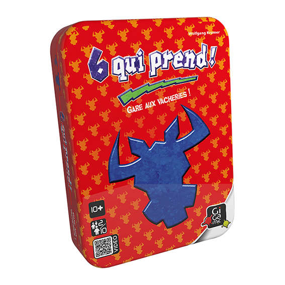
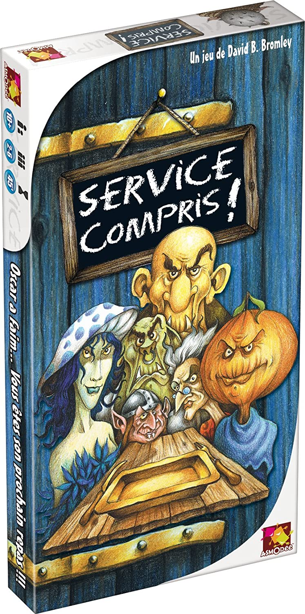
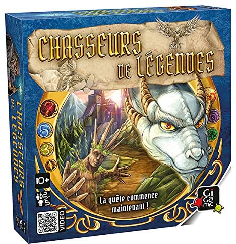
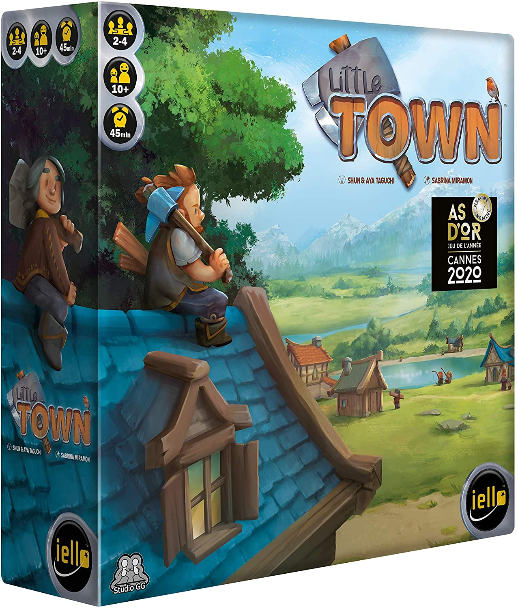
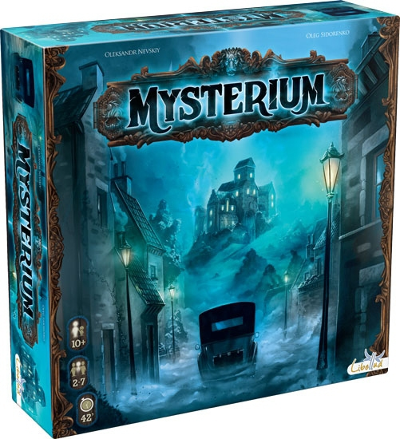
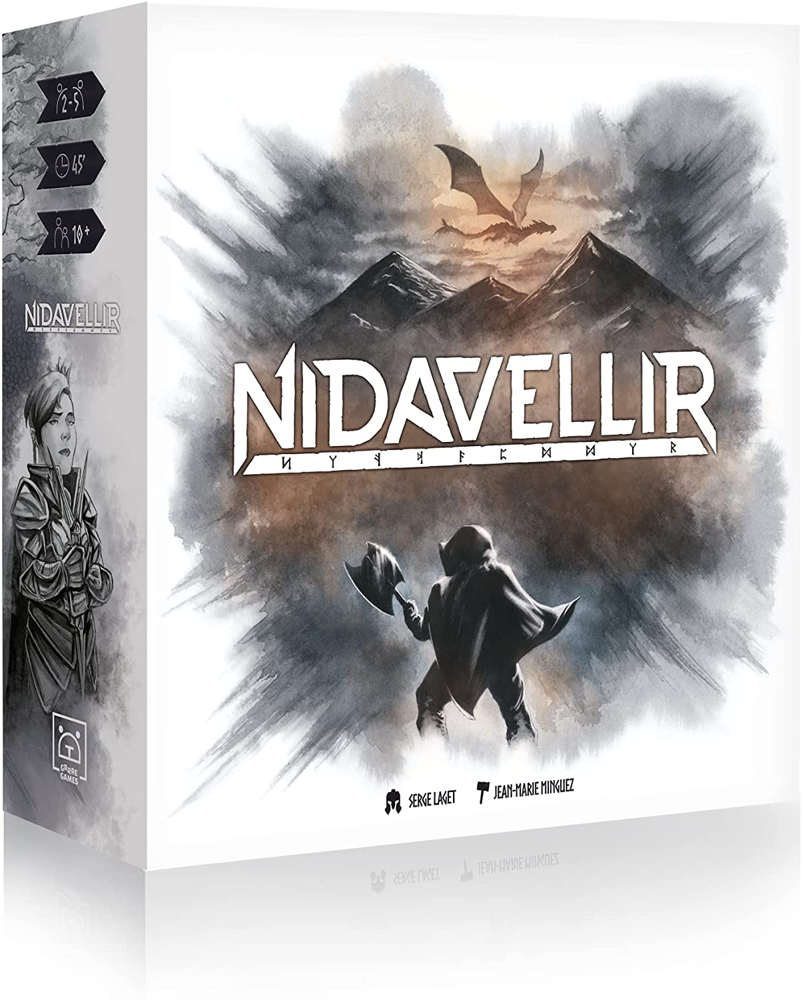
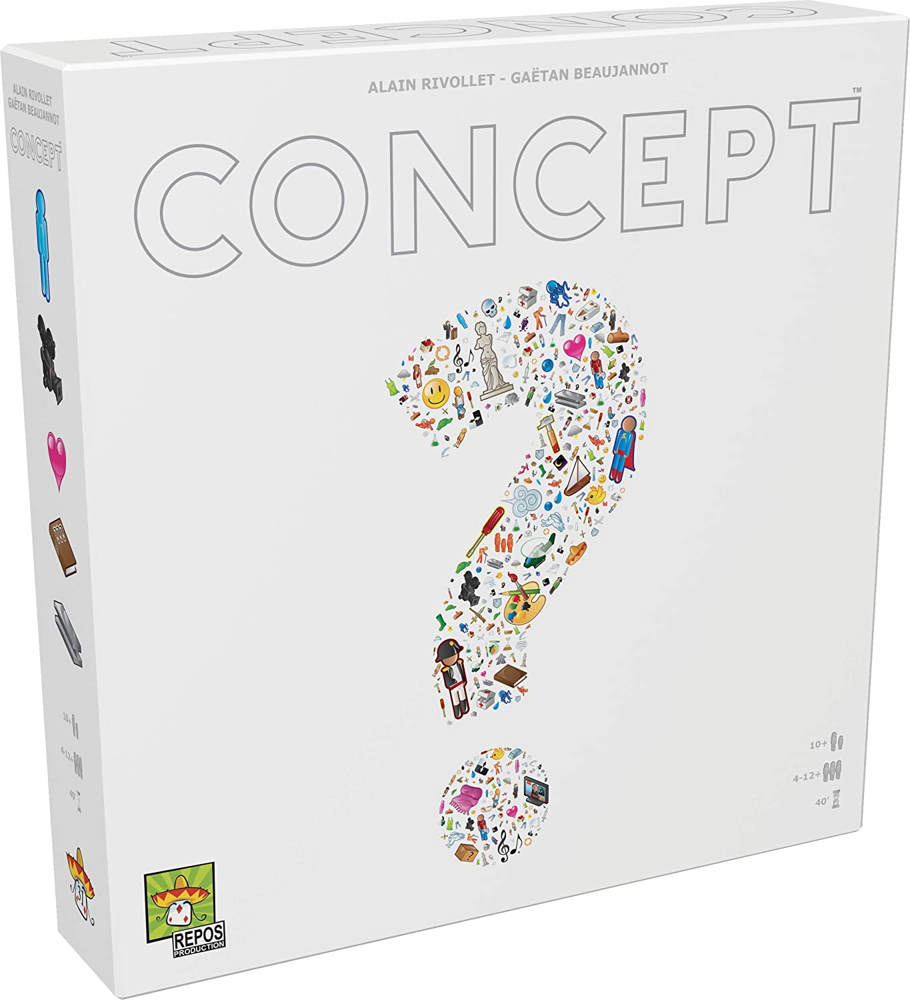

Vous trouverez ici une selection de nos jeux de plus de 40 minutes
6 qui prend

Age : 10 ans et plus
Nb de joueurs : 2 à 10
Temps de partie : 45 minutes
Ces drôles de cartes valent de 1 à 7 «têtes de boeufs» chacune. Votre but : en récolter le moins possible.
En début de manche vous recevez 10 cartes.
A chaque tour, les joueurs choisissent une carte et la révèlent à tous en même temps : ces cartes sont ajoutées
à l’une des 4 séries qui se forment sur la table. Celui qui doit jouer la sixième carte d’une série «récolte»
les 5 premières... et toutes leurs têtes de boeufs !
Quand les 10 cartes sont jouées, chacun compte ses boeufs et les additionne à son total précédent.
Après plusieurs manches, le plus petit troupeau gagnera la partie.
Service compris !

Age : 10 ans et plus
Nb de joueurs : 2 à 6
Temps de partie : 45 minutes
Chaque joueur dirige un peuple de petites créatures chétives mais appétissantes. Le plateau de jeu représente la
table à manger de l'insatiable géant, et à chaque tour, les cartes créatures qui y sont posées peuvent disparaître,
avalées qu'elles sont par le goulu. Les joueurs vont essayer d'y propulser les créatures de leurs adversaires afin
qu'elles soient dévorées. Le dernier joueur à posséder des créatures encore en jeu sera proclamé vainqueur.
Chasseurs de légendes

Age : 10 ans et plus
Nb de joueurs : 2 à 5
Temps de partie : 45 minutes
Les terres et le peuple des Perles, engouffrés dans l’obscurité par un sombre magicien vivent dans l‘attente qu‘un
héros viennent les libérer !
Dans Chasseurs de légendes, à chaque tour, vous devrez choisir judicieusement vos actions parmi les quatre qui vous
sont proposées.
Pour gagner un Personnage, vous devez jouer une combinaison spécifique de cartes de votre main.
Les personnages vous rapportent des points de victoire ou de précieux avantages.
Faites les bons choix et échangez vos cartes au bon moment pour acquérir de fantastiques et puissants personnages qui
vous amèneront à la victoire !
Town

Age : 10 ans et plus
Nb de joueurs : 2 à 4
Temps de partie : 45 minutes
Little Town est un jeu de stratégie et de placement d’ouvriers accessible et malin, destiné à être joué en famille et
entre amis. Simple à prendre en main, sa profondeur permet à chacun de développer rapidement son propre style de jeu.
Mysterium

Age : 10 ans et plus
Nb de joueurs : 2 à 7
Temps de partie : 45 minutes
Mysterium est un jeu d’enquête coopératif dans lequel tout le monde perd ou tout le monde gagne. Tous les joueurs sont
unis dans un même but : découvrir la vérité sur la mort du fantôme qui hante le manoir et lui apporter la paix !
Nidavellir

Age : 10 ans et plus
Nb de joueurs : 2 à 5
Temps de partie : 45 minutes
Nidavellir, le Royaume des Nains et des Naines, est menacé par le dragon Fafnir. En tant que vénérable Elvaland, vous avez
été mandaté(e)s par le Roi. Sillonnez chaque taverne du royaume, engagez les nain·e·s les plus habiles, recrutez les
héro(ïne)s les plus prestigieux(euses) et constituez le bataillon le plus à même de vaincre votre ennemi mortel ! A chaque
tour, misez une pièce sur chaque taverne. Dans le sens décroissant, choisissez un personnage et intégrez le à votre armée.
Chaque Classe de Nain(e)s possède une façon de « scorer » qui lui est propre : Forgeron(ne), Chasseur(euse), Guerrier(ère),
Explorateur(rice) et Mineur(euse). Un recrutement méticuleux vous permettra d’attirer un(e) puissant(e) Héros(ine) dans
votre armée. Vous aurez également la possibilité d’augmenter la valeur de vos pièces d’Or via un ingénieux système de « Coin
Building », et donc de prendre le meilleur sur les autres Elvalands.
Concept

Age : 10 ans et plus
Nb de joueurs : 4 à 12
Temps de partie : 40 minutes
Par équipes, faites deviner des mots aux autres joueurs en plaçant des pions sur différentes icônes du plateau.
Grâce aux nombreuses icônes et aux possibilités offertes par leurs interactions, il existe plusieurs façons de
faire deviner chaque mot... mais ce ne sont pas les concepts les plus simples qui sont les plus faciles à faire deviner.
A chaque fois, le joueur qui trouve le mot et l’équipe qui l’a fait deviner remportent des points de victoire.
Pour gagner, il faut cumuler le plus de points en fin de partie.